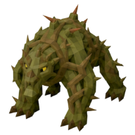
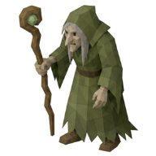
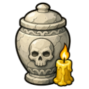

Big Bones
Other · Tier 2
| Property | Value |
|---|---|
| Value | 6 coins |
| Sells for | 0.75 coins each |
| High Alchemy | 1 coins |
| Stacks | Yes |
Dropped by
| Monster | Level | Amount | Chance |
|---|---|---|---|
 Briarbeast | 22 | 1 | Always |
| 24 | 1 | Always | |
 Hedge Witch | 28 | 1 | Always |
Sold at
| Shop | Zone | Price |
|---|---|---|
| 🕯️ The Bone Market | 🏚️ Bleakhaven Ruins | 40 coins |
Used to make
| Recipe | Level | Amount |
|---|---|---|
| 🦴 Offer Big Bones | ✝️ Prayer 15 | 1 |
Prayers
- ✝️ Lesser Ward: Prayer 15, uses 4
- 🎯 Lesser Focus: Prayer 15, uses 4
- 💪 Lesser Vigor: Prayer 15, uses 4
- 🏹 Lesser Aim: Prayer 15, uses 4
- 🔮 Lesser Mind: Prayer 15, uses 4
Quests

The Quiet Ossuary: hand in 150